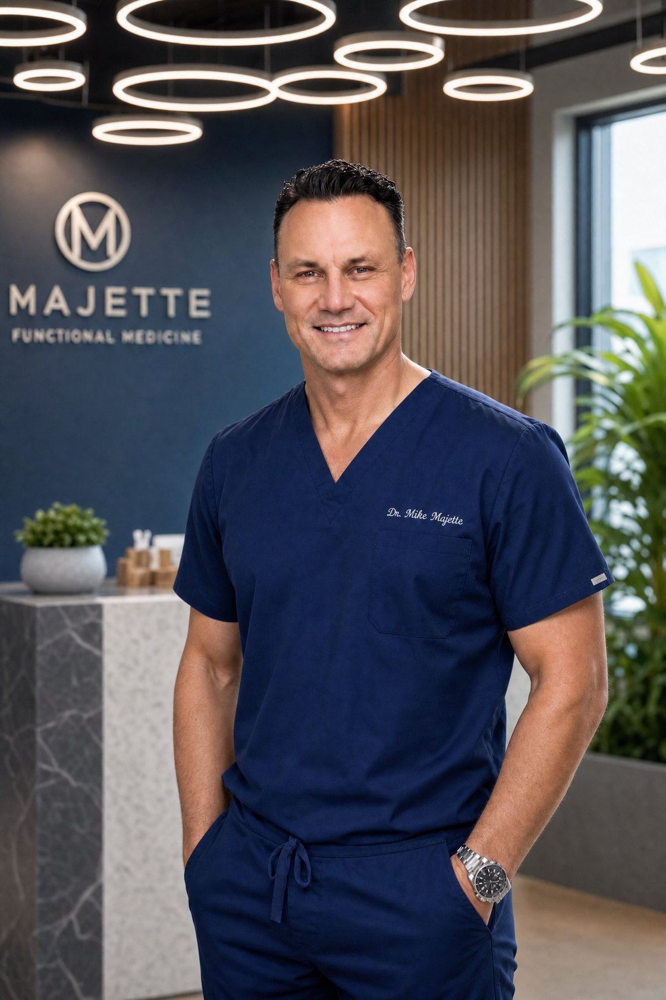

From one parent to another
I'm a dad who gets it.
For more than two decades I've cared for families in my practice. But this work became personal when I began noticing, in my own young son, the early signs that so many parents recognize. Walking that road as a father changed how I show up for every family who comes through my door.
I'm not here to promise miracles or to talk you out of the care your child's doctors recommend. I'm here to offer a calm, patient, welcoming place — and to walk beside you as one part of your child's larger team.
Credentials & focus
- Florida Doctor of Chiropractic — License #CH8705
- 24 years in private practice · family & pediatric chiropractic, conservative (non-surgical) spinal care
- Postgraduate training in clinical nutrition and pediatric care — [exact program names & issuers to add]
- Special clinical interest in supporting neurodivergent children and their families